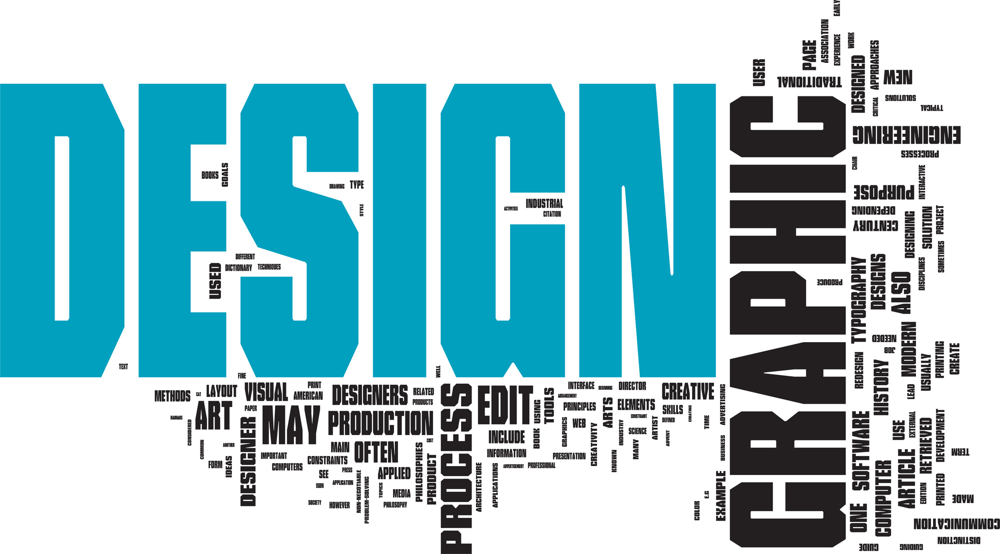
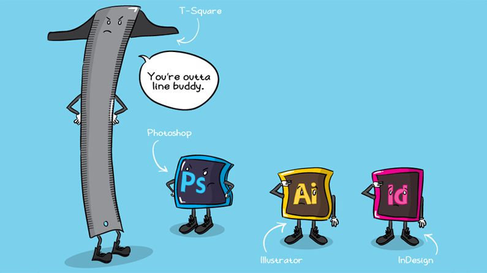

The Web
Deel 1
Multimedia
Profiel Content Creator
tooling Beeldbewerking
 Grafische vormgeving is het visueel vormgeven van ideeën in verschillende media, met als doel om mensen iets mee te delen. Dit vereist de inzet van zowel artistieke als technische vaardigheden. Bij grafische vormgeving wordt zowel visuele expressie als creativiteit nagestreefd in de presentatie van tekst en beeld.
Het primaire gereedschap van de grafische vormgeving blijft de creatieve geest. Kritisch, objectiverend en analytisch denken zijn vereist in de vele vormen van het ontwerp en de grafische representatie. De praktijk van de grafische vormgeving strekt zich tegenwoordig uit van het traditionele drukwerk tot de moderne computer, de interactieve media en het multimedia vormgeving van. Grafische vormgeving heeft zo zijn toepassing in bijvoorbeeld: Administratie, Advertenties, Entertainment, Journalistiek, Webdesign.
→ zie: Wikipedia Grafische vormgeving
Grafische vormgeving disciplines
 Animatie, Boekbandontwerpen, Communicatie, Datavisualisatie, Letterontwerpen, Desktoppublishing, Illustratie, Fotografie, Prentkunst, Kalligrafie, Reclame, Striptekenen, Typografie, Webdesign
- Tooling overzicht voor beeldbewerking
-
Alternatieve niét FOSS tooling is Adobe Photoshop geschikt voor Apple, Windows (betaald), Affinity Photo geschikt voor Windows, macOS, iPad (betaald), Acorn geschikt voor macOS (betaald), Sketch geschikt voor macOS (free account of betaald), Pixelmator Pro geschikt voor macOS (betaald), Corel Photo-Paint geschikt voor Windows (betaald), Corel Paint Shop Pro geschikt voor Windows (betaald), Sumo Paint Web app geschikt voor elk OS (free account of betaald), Paint.net geschikt voor Windows (free), Pixlr web app iOS en Android (free). Wél FOSS zijn:
- Gimp
-
 GIMP is een grafisch programma voor het bewerken van foto's en andere digitale beeldbewerking op de computer. Het programma draait onder Windows, macOS, Linux, BSD, OS/2 en Unix. De ontwikkelaars van GIMP hebben hun eigen UI-toolkit ontwikkeld die ze GTK+ hebben genoemd waardoor het programma eenvoudig voor verschillende systemen geschikt kan worden gemaakt.Door de uitgebreide functionaliteit, de uitbreidbaarheid en de vrije licentie is GIMP uitgegroeid tot een pakket dat zich kan meten met populaire commerciële programma's als Adobe Photoshop.
GIMP is een grafisch programma voor het bewerken van foto's en andere digitale beeldbewerking op de computer. Het programma draait onder Windows, macOS, Linux, BSD, OS/2 en Unix. De ontwikkelaars van GIMP hebben hun eigen UI-toolkit ontwikkeld die ze GTK+ hebben genoemd waardoor het programma eenvoudig voor verschillende systemen geschikt kan worden gemaakt.Door de uitgebreide functionaliteit, de uitbreidbaarheid en de vrije licentie is GIMP uitgegroeid tot een pakket dat zich kan meten met populaire commerciële programma's als Adobe Photoshop.
→ zie: Wikipedia GimpHet programma is uitermate geschikt voor designers, tekenaars, kunstenaars, voor wetenschappelijke toepassingen, voor filmproducties en voor het bewerken van foto's (bijvoorbeeld voor het web). Gebruikers die afbeeldingen voor drukwerk voorbereiden (het prepresstraject), zullen vooralsnog toch over een Photoshop-licentie willen beschikken omdat GIMP niet over CMYK-outputfunctionaliteit beschikt. (4-kleurenscheiding nodig bij vervaardigen drukwerk)..
→ zie: YouTube Videotorial Gimp - Krita
-
 Krita is een gratis en open-source raster grafische editor geschreven in Qt en voornamelijk ontworpen voor digitaal schilderen en animatiedoeleinden. Het beschikt over OpenGL-versneld canvas, ondersteuning voor kleurbeheer, een geavanceerde penseelmotor, niet-destructieve lagen en maskers, op groepen gebaseerd laagbeheer, ondersteuning voor vectorillustraties en schakelbare aanpassingsprofielen. Het draait op Windows en Unix-achtige besturingssystemen inclusief Linux en macOS.
Krita is een gratis en open-source raster grafische editor geschreven in Qt en voornamelijk ontworpen voor digitaal schilderen en animatiedoeleinden. Het beschikt over OpenGL-versneld canvas, ondersteuning voor kleurbeheer, een geavanceerde penseelmotor, niet-destructieve lagen en maskers, op groepen gebaseerd laagbeheer, ondersteuning voor vectorillustraties en schakelbare aanpassingsprofielen. Het draait op Windows en Unix-achtige besturingssystemen inclusief Linux en macOS.
→ zie: Wikipedia KritaMet Krita kunnen bestaande afbeeldingen worden bewerkt alsook nieuwe aangemaakt. Er is ondersteuning voor de bestandsformaten RAW, PNG, JPEG en TIFF. Krita bevat verschillende functies zoals zoom, lagen, kleur veranderen, tekst toevoegen, perspectief, kleuren mixen, selecteren in verschillende vormen en verschillende filters. Er kan worden getekend en geschilderd met verschillende soorten penselen, potloden en airbrush. "Natuurgetrouwe" effecten zoals schilderen op doek en verschillende soorten verf zijn ook mogelijk of in ontwikkeling. Tekenen is niet alleen mogelijk via een muiscursor in het programma, maar ook door middel van een tekentablet. Krita is uitbreidbaar met scripts en plug-ins die kunnen worden geschreven in C++, Python of Ruby. Krita 2.8 is 5 maart 2014 uitgebracht. Deze versie bevat onder meer OpenGL 3.0-code..
→ zie: YouTube Videotorial Krita